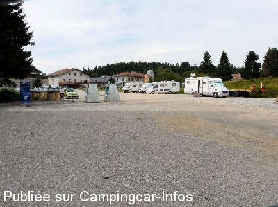
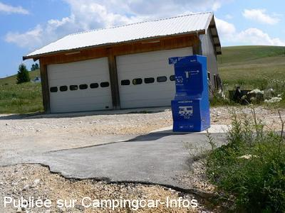

ASN = Aire de services avec stationnement nuit possible de :
LA PESSE
(N° 234)
Accès/adresse :
Rue de L’Épicéa
39370 LA PESSE
39370 LA PESSE
Latitude : (Nord) 46.28402° Décimaux ou 46° 17′ 2′′
Longitude : (Est) 5.84769° Décimaux ou 5° 50′ 51′′
Tarif : 2014
Stationnement gratuit
Eau : 2 €
Jetons à la boulangerie et au point Information
Type de borne : FLOT BLEU
Services :


Commerces à proximité
Autres informations :
Tel mairie : +33(0)384 427 083

Le 22/12/2010 par cc904

Le 03/07/2008 par JPS.68
de
fashiondapulse
le 01/09/2013 :
De passage en août 2013, je confirme les commentaires précédents.
Pas gênant et bien tranquille.
nous avons fait une rando avec un âne à la ferme du Berbois, un vrai plaisir !
De passage en août 2013, je confirme les commentaires précédents.
Pas gênant et bien tranquille.
nous avons fait une rando avec un âne à la ferme du Berbois, un vrai plaisir !
de
William G.
le 25/07/2013 :
Sommes passés le 24 juin 2013. La proximité de bâtiments municipaux et du tri sélectif n'ont pour nous pas été sources de nuisances sonores.
Idéal pour entreprendre des randonnées pédestres (le Crêt de Chalam via la Borne au Lion par exemple...) ou pour les vrais cyclistes de belles virées comme la découverte de la Combe d'Evuaz.
Boulangerie, boucherie-charcuterie, hôtel-restaurant à proximité. Très bon accueil des commerçants.
Sommes passés le 24 juin 2013. La proximité de bâtiments municipaux et du tri sélectif n'ont pour nous pas été sources de nuisances sonores.
Idéal pour entreprendre des randonnées pédestres (le Crêt de Chalam via la Borne au Lion par exemple...) ou pour les vrais cyclistes de belles virées comme la découverte de la Combe d'Evuaz.
Boulangerie, boucherie-charcuterie, hôtel-restaurant à proximité. Très bon accueil des commerçants.
de
bernard42
le 19/07/2013 :
aire bien situé , commerces proches et produits de bonne qualité
des travaux lors de notre passage , tres bruyant la journée
nous y retournerons si les travaux sont terminés ....
aire bien situé , commerces proches et produits de bonne qualité
des travaux lors de notre passage , tres bruyant la journée
nous y retournerons si les travaux sont terminés ....
de
le 21/08/2010 :
Aire calme, toujours au même endroit, toujours en travaux, la borne a été déplacée, les déchets sélectifs ont été rajoutés. Bon accueil.
Aire calme, toujours au même endroit, toujours en travaux, la borne a été déplacée, les déchets sélectifs ont été rajoutés. Bon accueil.
de
PAPIFOOT 56
le 21/08/2010 :
Je confirme les commentaires précédents. Concernant le commerce local, je vous conseille un petit détour chez le "petit charcutier traiteur local". Produit "MAISON". J'en salive encore !!!
J'y suis passé le 09.07, veille du passage du TOUR cycliste 2010.
Je confirme les commentaires précédents. Concernant le commerce local, je vous conseille un petit détour chez le "petit charcutier traiteur local". Produit "MAISON". J'en salive encore !!!
J'y suis passé le 09.07, veille du passage du TOUR cycliste 2010.
de
Jacques OLIVIER
le 31/05/2008 :
Le parking étant en réfection, nous avons pu stationner quant même au calme. Je vous recommande le Relais des Skieurs, au centre du village où le couple de patrons est très sympa! et FRANCOIS fait des pizzas succulentes digne de l'ITALIE.
Le parking étant en réfection, nous avons pu stationner quant même au calme. Je vous recommande le Relais des Skieurs, au centre du village où le couple de patrons est très sympa! et FRANCOIS fait des pizzas succulentes digne de l'ITALIE.
de
maurice
le 27/11/2007 :
Ce parking est maintenant une aire avec vidange eaux noires et grises, pas d'électricité, eau avec jetons 2€ à la boulangerie et au point I. Stationnement illimité.
Tel mairie 03 84 42 70 83
Ce parking est maintenant une aire avec vidange eaux noires et grises, pas d'électricité, eau avec jetons 2€ à la boulangerie et au point I. Stationnement illimité.
Tel mairie 03 84 42 70 83
de
Stacj
le 26/05/2007 :
De passage deux jours dans la toute petite station de la Pesse, nous avons découvert la mise en place d'une borne Flot Bleu. Jetons 2€ à prendre à la boulagerie toute proche.
C'est un un village très sympathique à découvrir pour son calme, ses balades, son accueil.
De passage deux jours dans la toute petite station de la Pesse, nous avons découvert la mise en place d'une borne Flot Bleu. Jetons 2€ à prendre à la boulagerie toute proche.
C'est un un village très sympathique à découvrir pour son calme, ses balades, son accueil.